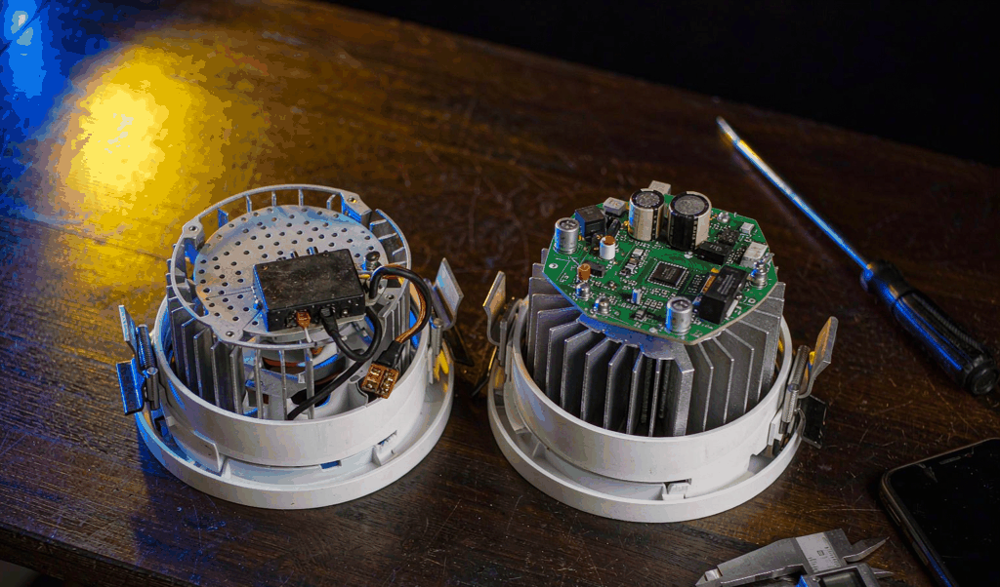
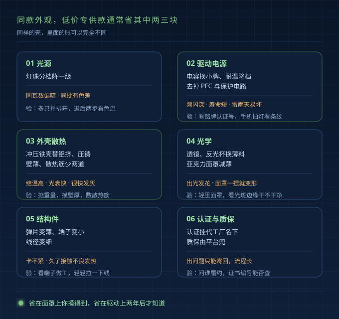
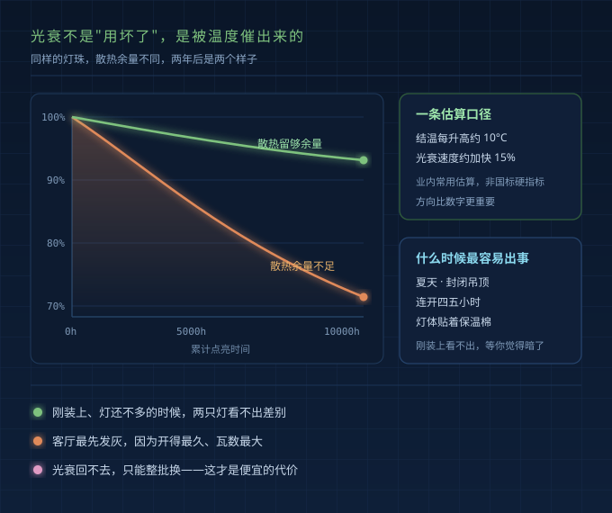
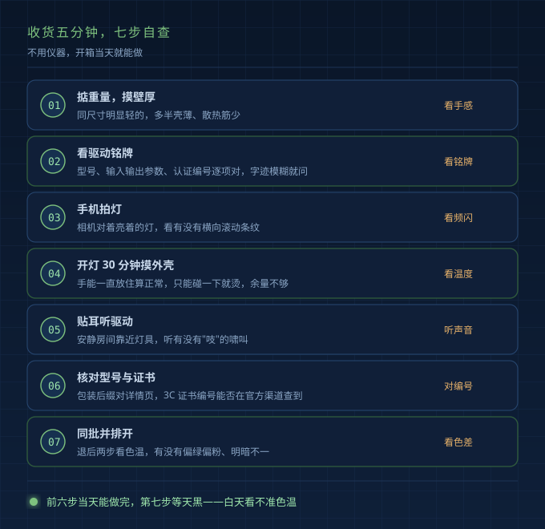

上周三下午，老客户拎着两只筒灯来我这儿。一只网购，一只店里拿的，外观一模一样。他说，你帮我看看，我是不是多花钱了。
我把两只都拆了。网购那只轻一截；散热筋浅，还少两道；驱动盒里电容小一号，没看到 PFC。最后翻标签，型号后缀差两个字母。
他愣了半天：这不就是一个东西吗。
不是。同款外观，两套货。
为什么型号对不上
厂家不是不想让你比价，是不敢。线上线下同一个型号，门店就成了线上的免费展厅。
所以通行做法是：同款外观，不同渠道给不同型号后缀。型号不通用，参数表也不通用。网上搜不到线下的型号，拿去门店问，也说没这款。
后果是：你以为在比"同款谁便宜"，其实比的是两个产品。
省钱的六个位置
灯具成本能拆成六块，低价专供款通常省其中两三块。
| 位置 | 线上常见做法 | 会带来什么 | 怎么看出来 |
|---|---|---|---|
| 光源 | 灯珠分档降一级 | 同瓦数偏暗，同批有色差 | 多只并排开，看色温 |
| 驱动电源 | 电容换小牌、耐温降档，去掉 PFC 与保护电路 | 频闪深、寿命短，雷雨天易坏 | 看铭牌与认证；拍灯看条纹 |
| 外壳散热 | 冲压铁壳替铝挤/压铸，壁薄筋少 | 结温高，光衰快，很快发灰 | 掂重量、看壁厚、数筋 |
| 光学 | 透镜、反光杯换薄料，面罩减薄 | 出光发花，面罩一捏就变形 | 轻压面罩，看光斑边缘 |
| 结构件 | 弹片变薄、端子变小、线径变细 | 卡不紧，久了接触不良发热 | 看端子做工，拉一下线 |
| 认证质保 | 认证挂代工厂名下，质保由平台兜 | 出问题只能寄回，流程长 | 问谁履约，编号能否查 |
公开资料里有例子：同尺寸筒灯，线上引流款标 24W，线下款标 38W。瓦数低，很多时候是不敢标高——同样的壳和散热面积，标上去结温压不住。这类线上款结构更简易，面罩偏塑料感，密封性弱。
不是所有线上款都这样。部分低价专供款存在外协代工，铝基板厚度、驱动元器件规格可能降级。

"两个月就发灰"是怎么来的
门店老板跟我讲，客户图便宜网购一批筒灯，装完全屋挺亮。不到两个月，客厅先灰了。不是脏，是蒙了一层雾的灰。最后全拆重买。
根子在结温。LED 光通量随时间往下走，正常，但速度跟温度强相关。业内常用估算口径：结温每升高约 10°C，光衰速度大约加快 15%——这是估算，不是国标硬指标。
散热余量不足的灯，刚装上时看不出。夏天、封闭吊顶、连开四五个小时，结温顶在高位，光衰就快。等你觉得暗了，回不去了。

收货五分钟，七步自查
不用仪器，收货当天可做。
- 掂重量，看壁厚。 同尺寸明显轻的那只，多半壳薄筋少。数散热筋，摸边缘厚度。
- 看驱动铭牌。 型号、输入输出参数、认证编号逐项对。字迹模糊、编号空着的，直接问。
- 手机拍灯。 相机对着亮着的灯，看有没有横向滚动条纹。越明显，频闪越深。
- 开灯 30 分钟摸外壳。 手能一直放住算正常，烫得只能碰一下，散热余量不够。
- 贴耳听驱动。 安静房间靠近灯具，听有没有"吱"的啸叫。有，元件或做工有问题。
- 核对型号。 包装后缀和详情页是否一致，3C 证书编号能否在官方渠道查到。
- 同批并排开。 多只一起点亮，退后两步看色温，有没有偏绿偏粉、明暗不一。

双11 下单前，问客服四句话
别问"质量好不好"，问具体的。
- 驱动什么型号？输入输出参数和认证编号发我一下。
- 这只灯用什么网关？和我家现有协议是不是一套体系？
- 质保几年，谁来履约？店铺、品牌方，还是代工厂？
- 外壳什么工艺，冲压铁壳还是铝挤压铸？散热筋几道，面罩多厚？
智能款特别问第二句。线上款和线下 Pro 系列，网关和固件常常不是一套，连不上就麻烦。
售后同理。线上寄回、检测、再寄回；线下找经销商，很多时候能上门。年限一样，履约不同。
FAQ
线上款一定比线下款差吗？
不一定。有些品牌线上线下一套研发、一套供应链，只是型号分开。看那六个位置，尤其驱动和散热。
型号后缀不一样，就是减配吗？
不一定，但值得警惕。有时只是渠道区分，有时确实配置不同。把铭牌摆一起对，输出电流、功率因数、认证编号，对不上就是两个东西。
3C 证书能查到，就放心了？
证书只说明过了安全门槛，不说明耐用。它管安全和电磁兼容，不管光衰，也不管两年后灰不灰。
最后
我不劝你买贵的。
我是做驱动电源的，见过太多灯，壳子漂亮，里面一颗电容就决定它两年后的样子。也知道有人预算紧，几百块装一屋子。
但你得知道钱花在哪。省在面罩上，你摸得到；省在驱动上，两年后才知道。
买前五分钟问清楚，收货五分钟验一遍。比省下的钱值。
（本文含 AI 辅助整理，技术判断来自一线经验）